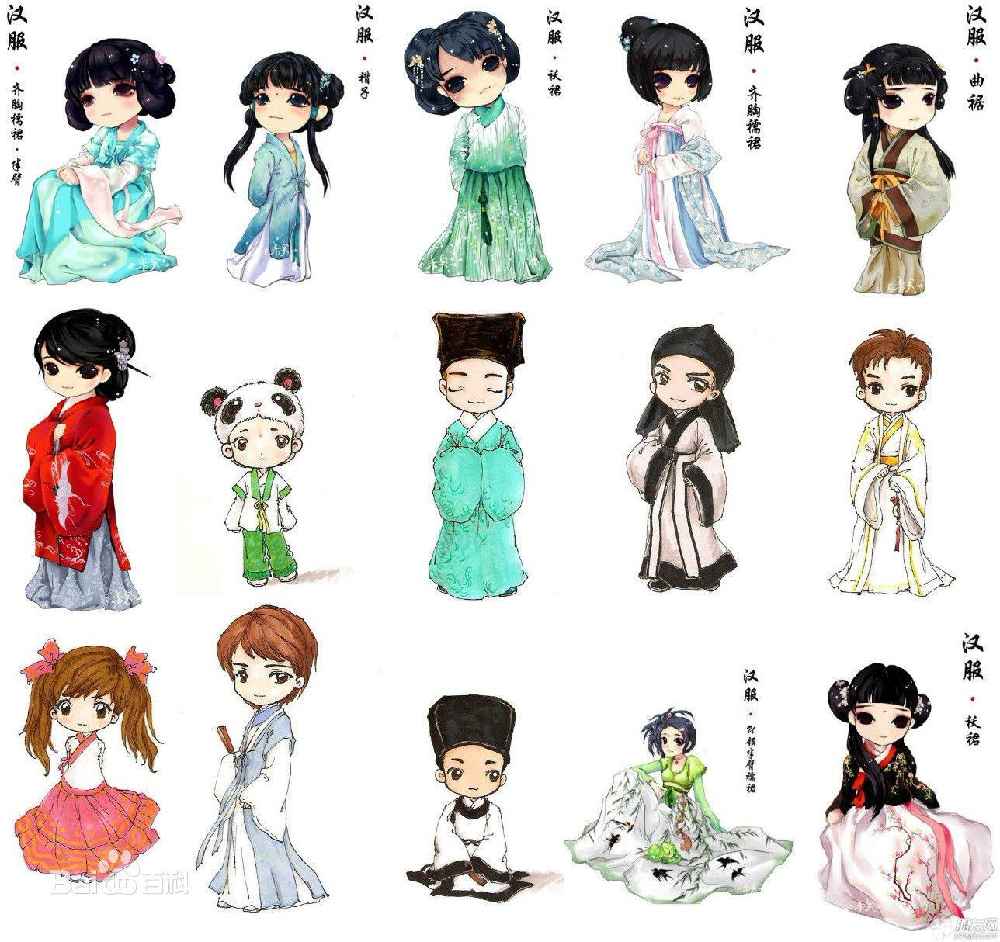
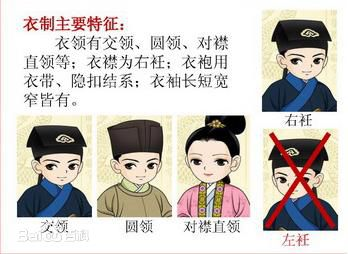
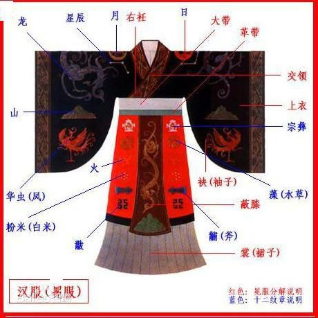
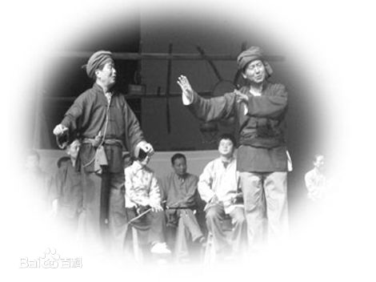

-
汉服
汉服，全称是“汉民族传统服饰”，又称汉衣冠、汉装、华服，是从黄帝即位到公元17世纪中叶（明末清初），在汉族的主要居住区，以“华夏－汉”文化为背景和主导思想，以华夏礼仪文化为中心，通过自然演化而形成的具有独特汉民族风貌性格，明显区别于其他民族的传统服装和配饰体系，是中国“衣冠上国”、“礼仪之邦”、“锦绣中华”、赛里斯国的体现，承载了汉族的染织绣等杰出工艺和美学，传承了30多项中国非物质文化遗产以及受保护的中国工艺美术。
   -
锣鼓草
锣鼓草是陕南汉中山区流行的一种传统民俗文化形式，山区人民在田间薅草时，为加快进度一至三人在人群后，边敲锣鼓，边唱督工歌，随机编随情唱，尤其多在进度慢或做活质量差者身后边敲边唱，以激励干活加快进度，提高质量。该形式使生产场面热闹活跃，消除了劳做的疲乏、劳累、寂寞之感。
-
汉调二簧
汉调二簧原名“山二簧”、“土二簧”或“陕二簧”，陕南传统地方戏剧之一，是陕西省第二大的传统戏曲剧种，由汉水流域的山歌、民歌、小调发展而成，音调为汉中一带发音，与湖北汉调戏相似。长于文戏，巴山气息浓郁，音调幽雅，唱腔婉转，道白柔和，语言风趣，表演细腻，纯朴大方，唱腔及念白巴山音韵很重，以川味见长。板式有上、下调之分，上调多用于表现悲怆、凄凉、愤慨情绪；下调多表现舒畅、明快豪放情绪。本市汉台区、西乡县、镇巴县等地60年代以前多表演汉调二簧，今渐无。
